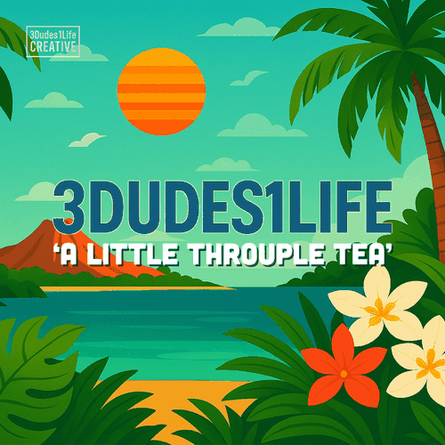

You’re offline, babe.
The tea needs Wi‑Fi. Reconnect, then try again. Pages already saved by your browser may still be available through your Back button.

The tea needs Wi‑Fi. Reconnect, then try again. Pages already saved by your browser may still be available through your Back button.